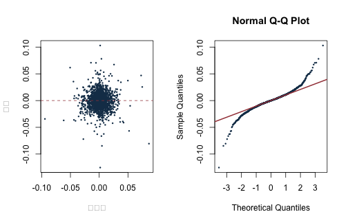

《財務時間序列分析》線上附錄
R01：R、tidyverse 與手動 OLS
本附錄對應第 1 章，使用固定的 S\&P 500 日報酬面板練習 R 物件、dplyr 資料處理與手動 OLS。例子把 AAPL 當日報酬對 MSFT、NVDA 的等權平均當日報酬做線性投影，只用來核對矩陣代數；它不是即時預測，也不具有因果解讀。
knitr::opts_chunk$set(
echo = TRUE, message = FALSE, warning = FALSE,
fig.width = 7, fig.height = 4.5
)
stopifnot(requireNamespace("dplyr", quietly = TRUE))
stopifnot(requireNamespace("tibble", quietly = TRUE))
library(dplyr)
##
## Attaching package: 'dplyr'
## The following objects are masked from 'package:stats':
##
## filter, lag
## The following objects are masked from 'package:base':
##
## intersect, setdiff, setequal, union
library(tibble)
root_candidates <- c(".", "..")
is_root <- vapply(root_candidates, function(x) {
file.exists(file.path(x, "main.tex"))
}, logical(1))
stopifnot(any(is_root))
project_root <- root_candidates[which(is_root)[1]]
project_path <- function(...) file.path(project_root, ...)
讀取、選欄與資料契約#
data_path <- project_path(
"data", "processed", "sp500_returns_balanced_2013_2022.csv"
)
manifest_path <- project_path("data", "processed", "manifest.csv")
stopifnot(file.exists(data_path), file.exists(manifest_path))
raw <- read.csv(data_path, check.names = FALSE)
returns <- raw |>
transmute(
date = as.Date(date),
AAPL = as.numeric(AAPL),
MSFT = as.numeric(MSFT),
NVDA = as.numeric(NVDA)
) |>
arrange(date)
stopifnot(!anyNA(returns), !anyDuplicated(returns$date))
stopifnot(all(diff(returns$date) > 0))
glimpse(returns)
## Rows: 2,384
## Columns: 4
## $ date <date> 2013-01-03, 2013-01-04, 2013-01-07, 2013-01-08, 2013-01-09, 2013…
## $ AAPL <dbl> -0.012622072, -0.027854471, -0.005882822, 0.002691439, -0.0156289…
## $ MSFT <dbl> -0.0133961372, -0.0187154612, -0.0018699229, -0.0052453126, 0.005…
## $ NVDA <dbl> 0.0007860068, 0.0329928166, -0.0288975086, -0.0219260948, -0.0224…
資料是作者工作版價格檔建立的固定版本。依 data/DATA_SOURCES.md 的已決定政策，公開網站提供程式與執行結果，但不再散布這份凍結資料。
向量、資料框與管線#
first_five <- returns$AAPL[1:5]
object_summary <- tibble(
object = c("first_five", "returns"),
class = c(class(first_five)[1], class(returns)[1]),
length_or_rows = c(length(first_five), nrow(returns))
)
object_summary
## # A tibble: 2 × 3
## object class length_or_rows
## <chr> <chr> <int>
## 1 first_five numeric 5
## 2 returns data.frame 2384
用 mutate 建立兩檔股票的等權平均，並用 summarise 依年度描述 AAPL。因原檔已是簡單報酬，平均數仍以小數表示。
analysis_df <- returns |>
mutate(
tech_equal = (MSFT + NVDA) / 2,
year = as.integer(format(date, "%Y"))
)
annual_summary <- analysis_df |>
group_by(year) |>
summarise(
observations = n(),
mean_aapl = mean(AAPL),
sd_aapl = sd(AAPL),
.groups = "drop"
)
annual_summary
## # A tibble: 10 × 4
## year observations mean_aapl sd_aapl
## <int> <int> <dbl> <dbl>
## 1 2013 251 0.000347 0.0179
## 2 2014 252 0.00145 0.0136
## 3 2015 252 0.0000199 0.0168
## 4 2016 252 0.000575 0.0147
## 5 2017 251 0.00164 0.0111
## 6 2018 251 -0.0000573 0.0181
## 7 2019 252 0.00266 0.0165
## 8 2020 253 0.00281 0.0294
## 9 2021 252 0.00131 0.0158
## 10 2022 118 -0.00202 0.0227
手動 OLS#
令 \(y\) 為 AAPL 當日報酬，\(x\) 為 MSFT、NVDA 的等權平均當日報酬。設計矩陣第一欄是截距。
y <- analysis_df$AAPL
X <- cbind(Intercept = 1, tech_equal = analysis_df$tech_equal)
stopifnot(nrow(X) == length(y), qr(X)$rank == ncol(X))
beta_manual <- solve(crossprod(X), crossprod(X, y))
fitted_manual <- as.numeric(X %*% beta_manual)
residual_manual <- y - fitted_manual
tibble(
term = rownames(beta_manual),
estimate = as.numeric(beta_manual)
)
## # A tibble: 2 × 2
## term estimate
## <chr> <dbl>
## 1 Intercept 0.000124
## 2 tech_equal 0.569
crossprod(X) 等於 \(X^\top X\)，crossprod(X, y) 等於 \(X^\top y\)。正式計算通常偏好 QR 分解，因為直接求逆在近共線時較不穩定；這裡使用公式是為了對照課文。
與 lm、QR 解核對#
fit_lm <- lm(AAPL ~ tech_equal, data = analysis_df)
beta_qr <- qr.solve(X, y)
comparison <- tibble(
term = names(coef(fit_lm)),
manual = as.numeric(beta_manual),
qr = as.numeric(beta_qr),
lm = as.numeric(coef(fit_lm))
)
comparison
## # A tibble: 2 × 4
## term manual qr lm
## <chr> <dbl> <dbl> <dbl>
## 1 (Intercept) 0.000124 0.000124 0.000124
## 2 tech_equal 0.569 0.569 0.569
stopifnot(
isTRUE(all.equal(as.numeric(beta_manual), as.numeric(beta_qr))),
isTRUE(all.equal(as.numeric(beta_manual), as.numeric(coef(fit_lm))))
)
正規方程式與配適分解#
含截距 OLS 殘差應與設計矩陣每欄正交。
orthogonality <- as.numeric(crossprod(X, residual_manual))
names(orthogonality) <- colnames(X)
orthogonality
## Intercept tech_equal
## 5.342948e-16 2.107689e-16
stopifnot(max(abs(orthogonality)) < 1e-10)
sst <- sum((y - mean(y))^2)
sse <- sum(residual_manual^2)
ssr <- sum((fitted_manual - mean(y))^2)
c(SST = sst, explained = ssr, SSE = sse, difference = sst - ssr - sse)
## SST explained SSE difference
## 7.771318e-01 2.989755e-01 4.781562e-01 -4.996004e-16
缺值政策必須明寫#
以下函數預設遇到缺值就停止；只有呼叫者明確要求時才刪除完整列。這比把 na.rm = TRUE 散落在每個統計量中更容易審核。
prepare_complete <- function(data, columns, allow_drop = FALSE) {
stopifnot(all(columns %in% names(data)))
ok <- complete.cases(data[, columns, drop = FALSE])
if (!all(ok) && !allow_drop) {
stop("指定欄位含缺值；請決定刪除、填補或修正來源。")
}
data[ok, , drop = FALSE]
}
toy <- tibble(y = c(1, 2, NA), x = c(0, 1, 2))
expected_error <- try(
prepare_complete(toy, c("y", "x")),
silent = TRUE
)
inherits(expected_error, "try-error")
## [1] TRUE
prepare_complete(toy, c("y", "x"), allow_drop = TRUE)
## # A tibble: 2 × 2
## y x
## <dbl> <dbl>
## 1 1 0
## 2 2 1
診斷圖#
par(mfrow = c(1, 2))
plot(
fitted_manual, residual_manual,
xlab = "配適值", ylab = "殘差",
pch = 16, cex = 0.45, col = "#173B57"
)
abline(h = 0, lty = 2, col = "#A34045")
qqnorm(residual_manual, pch = 16, cex = 0.45, col = "#173B57")
qqline(residual_manual, col = "#A34045", lwd = 2)

par(mfrow = c(1, 1))
日報酬殘差常有厚尾與波動群聚；普通 OLS 係數的代數仍成立，但推論需要檢查時間相依與異質變異。若改成預測問題，所有解釋變數還必須在預測起點可得，並依第 8 章做時間排序的樣本外評估。